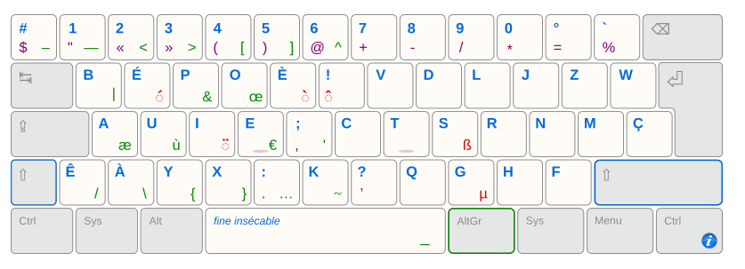

Pendant longtemps, j'ai utilisé le clavier AZERTY sans trop me poser de questions. C'est celui qu'on apprend à l'école, celui qu'on retrouve partout en France. Bref, la norme.
Mais avec le temps, surtout en codant et en passant pas mal de temps dans un terminal, j'ai commencé à sentir que quelque chose n'allait pas vraiment. Des doigts qui se tordent, des positions étranges, de la tension dans les mains... pas idéal quand on passe des heures à taper.
À force, c'est devenu désagréable. Et plutôt que d'accepter ça pour les prochaines décennies, je me suis dit qu'il valait mieux régler le problème maintenant. Après tout, l'AZERTY a été conçu à l'époque des machines à écrire, pas pour coder en 2025.
En cherchant des alternatives, un ami (Plouf) m'a fait découvrir le BÉPO. Grosse révélation : on peut réellement taper autrement. Le BÉPO (image en bas) est pensé pour le français et réduit les déplacements des doigts. Ça m'a ouvert les yeux... mais aussi montré que chaque disposition a ses compromis, notamment dès qu'on sort du français ou qu'on code beaucoup.

Disposition BÉPO
Du coup, j'ai continué à creuser. Et là, je suis tombé sur ERGO-L. L'idée derrière ERGO-L est simple : moins forcer, plus de confort. Pas besoin d'être parfait sur le papier, l'objectif est surtout d'être agréable à utiliser tous les jours. Utilisable pour le français, l'anglais et le code.

Disposition ERGO-L
Aujourd'hui, je débute l'apprentissage (première ligne en cours 189 caractères à la minutes contre 247 en AZERTY). C'est lent, parfois déroutant, mais clairement intéressant. Et surtout, je sens déjà que mes mains sont plus détendues et que mes mouvements sont plus naturels. L'objectif ? Pouvoir coder, écrire et travailler sans me battre avec mon clavier, et garder mes mains en bon état sur le long terme.
Hésitez pas à venir sur mon Github pour découvrir mes projets :